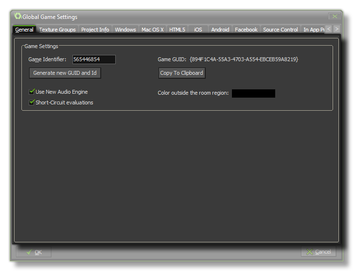

 This tab deals with a
couple of general aspects of how GameMaker: Studio will run your
game.
Here you can choose the colour to be drawn when the view goes
outside of the room region (default is black), and you can generate
a unique Game Identifier which can be accessed in your game by
using the constant game_id.
The button to generate this id also re-creates the Game GUID
hash which can then be copied to the clipboard with the help of the
button below for use in your applications and games.
You also have the option to turn off or on the new Audio Engine
that GameMaker: Studio uses. Due to incompatibilities you
cannot have both the new audio engine and the legacy sound
engine active at the same time. For old games created with other
versions of GameMaker or for those games started before the
new audio engine was added, the Legacy Audio will be used as
default, while for all new games GameMaker: Studio will
default to the new audio system. However, you can change this at
any time by flagging (or un-flagging) this option. For more
information on the new Audio Engine, please see the section on
Game
Assets - Sound.
Finally, there is an option to turn on or off Short Circuit
Evaluation. The default behaviour for GameMaker: Studio is to
have it on, meaning that in any boolean check with multiple
expressions, if any of them fail then the rest will be "skipped",
giving a very minor boost to your game logic. However, older
versions of GameMaker evaluated both arguments to a boolean
operation, even when the first argument already determined the
outcome, so disabling this option will return GameMaker to using
the previous method. Generally you would want this on, but in
certain cases (particularly if you are importing old projects) you
may need to switch this off to prevent any undesired effects.
| Converted from CHM to HTML with chm2web Standard 2.85 (unicode) |